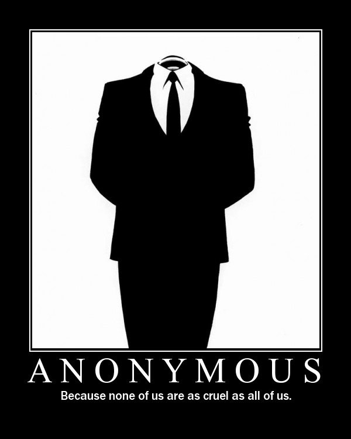

![Good morning b darth Pope I've got the high ground Cock goes where loli /r/ ur doods kplzthnx no u im in ur vtec just kicked in yo master of the obvious nigger bosnian bosnian told you I was cheer up kid hardcore camwhore facky is this loli fuck DONATE TO 4CHAN huge gaping vagina the size of a huge gaping vagina the size of a hallway u gonna get raped. lain cries and whines I came battletoads aiiiir pedobear + der fuhrer superior around blacks w.t. snacks in soviet russia the grammatically suboordinate idea comes first wryyyyyyyyyyyyyy happy negro for fuck win no u fail drama cockmongler I see what you did y hallo thar buttsecks anal sex hurts surprise buttsecks george covercat lets eat corns zimmer fucking friday drama kill it with fire oh exploitable marked for deletion (old) vin diesel zing torrent plz hay guyz lol nevada pwned my harbor bus age is really fucking stupid needs more moot majored in mexican studies guro sauce with eyebeams millhouse sticky fap fap fap anonymous does not forgive I drew this spike dies that guy broke 4chan wtf is this shit o rly get me on the left wordfilter > good era you look kind of like jew chan where is your god now no girls on the ha ha ha I am using the you win an internet serious business xbox is hueg gb2 zardoz stfu noob fag oh lawd is dat sum spincock gonna have to choke a dracula penis chickenz everyone is gay for bridget I can't see shit how do I shot interweb Goodnight b copyright moot.](../../images/4chan-post-06-06-05.png "Good morning b darth Pope I've got the high ground Cock goes where loli /r/ ur doods kplzthnx no u im in ur vtec just kicked in yo master of the obvious nigger bosnian bosnian told you I was cheer up kid hardcore camwhore facky is this loli fuck DONATE TO 4CHAN huge gaping vagina the size of a huge gaping vagina the size of a hallway u gonna get raped. lain cries and whines I came battletoads aiiiir pedobear + der fuhrer superior around blacks w.t. snacks in soviet russia the grammatically suboordinate idea comes first wryyyyyyyyyyyyyy happy negro for fuck win no u fail drama cockmongler I see what you did y hallo thar buttsecks anal sex hurts surprise buttsecks george covercat lets eat corns zimmer fucking friday drama kill it with fire oh exploitable marked for deletion (old) vin diesel zing torrent plz hay guyz lol nevada pwned my harbor bus age is really fucking stupid needs more moot majored in mexican studies guro sauce with eyebeams millhouse sticky fap fap fap anonymous does not forgive I drew this spike dies that guy broke 4chan wtf is this shit o rly get me on the left wordfilter > good era you look kind of like jew chan where is your god now no girls on the ha ha ha I am using the you win an internet serious business xbox is hueg gb2 zardoz stfu noob fag oh lawd is dat sum spincock gonna have to choke a dracula penis chickenz everyone is gay for bridget I can't see shit how do I shot interweb Goodnight b copyright moot.")
The Internet is Serious Business!
Home > Computers, Technology, and Internet > 4chan > Thoughts on Froge's 4chan: A Song of Kek and Cringe
4chan: A Song of Kek and Cringe
A fellow Neocities user, Froge, recently published an article entitled 4chan: A Song of Kek and Cringe
, which is mostly a glossary of terms used on the site, but also contains a bit of its history. It was undertaken by him after I commented on an earlier piece of his (a history of Tumblr, including his personal experiences on it), in which I casually inquired if he had been browsing 4chan for as long as Tumblr, and expressed my interest regarding his perspective of the history of 4chan. At the time, I did not think that he would seriously consider my request, but he did, and devoted three weeks to writing it; because of this, and because it concerns a subject that is very close to my heart, I feel compelled to acknowledge it with a response.
Froge reveals in the piece that he discovered 4chan in 2010, but that he has not browsed the site heavily, instead preferring Tumblr. I first discovered 4chan around December 2007, and though initially I only visited it sporadically, sometime in the early 2010s (and definitely no later than mid-2012) I began checking it regularly, and still continue to do so; it is therefore my hope that I may be able to offer a perspective which has the benefit of at least two more years' worth of firsthand experience with the site and its culture.
I admit that when I first read through the article, I was caught off-guard by the appearance in the glossary of a few terms of which I was completely unaware, despite the fact that I began visiting 4chan a few years before Froge. I soon noticed, however, that all the terms I didn't know (viz., Barneyfag, bumpfag, Doremifriend, froge, and GR15) were peculiar to boards that I do not browse, but which Froge does (viz., /co/, /trash/, /mlp/, and /s4s/). During my first reading I thought that the piece was, in places, too biased towards the brony subculture—in the brief history of the site at the beginning of the article, for instance, he dedicates an entire subsection to the Great Pony War
, i.e., the emergence of the subculture on 4chan, which, if I were to write a history of the site, would have been but a mere paragraph, or less.
I now realize that such bias is almost inevitable in any history of the site written in 2020 by a single person. 4chan's userbase has grown very large over the years, so much so that today it is less meaningful to speak of a single, site-wide culture. Every board now has, to varying degrees, its own culture, memes, and slang, and today it is no longer possible for a single individual to regularly browse every board on the site and thereby absorb all parts of the culture, unlike in the 2000s, when 4chan culture was, more or less, /b/ culture. Froge acknowledges his bias, stating that he writes from the perspective of a Canadian social democrat who shills for the NDP
and who reads /co/, /trash/, /mlp/, and /s4s/; I will here acknowledge mine, and say that the following piece is written from the perspective of a 2000s nostalgic, an American cyberlibertarian who shills for the Libertarian Party, and a regular of /g/ and /pol/ who also visits /f/, /his/, and /int/ occasionally,(1) and who used to browse /b/ regularly back when it was the largest and most influential board on the site.
There are many good sections in the article, and much humor is scattered throughout. Much of it is very accurate, though there are some entries, mostly concerning contentious topics, which I feel have been given somewhat of an unfair treatment.(2) Normally I would not hesitate to hurl harsh criticisms and call the author a massive faggot—such is the standard course of action for a 4channer, of course—but because Froge is a fellow whom I very much respect, because he is also a fellow 4channer, and because the entire thing, in the first place, was written due to a request of mine, I shall restrain myself in those cases to strictly constructive criticism.
I will comment first on particular glossary entries, and then proceed to offer my thoughts concerning the short history near the beginning of the article.
As a general note, the author's decisions regarding which terms to include in the glossary are sensible, though biased at times to board-specific (as opposed to site-wide) slang, and personally I would have also included important terms like, e.g., AIDS, b&, butthurt, copypasta, happening, moar, pizza, PROTIP, and v&; an entry for Project Chanology; and definitions for catchphrases like Hackers on steroids
, Internet Hate Machine
, Not your personal army
, Tits or GTFO
, and, of course, The Internet is Serious Business
.
This is mostly correct, with only a very small issue: in the first paragraph, Froge asserts that the representation of the hacktivist Anonymous during the late 2000s and early 2010s was an invisible man wearing a Guy Fawkes mask in addition to a black-tie tuxedo
. To more be precise, there were in those days two common representations of the movement: the one was an invisible man wearing a black business suit and tie, and the other was a (normal, not invisible) man wearing the Guy Fawkes mask, whatever other clothing being irrelevant; at times, even the mask by itself, without a body, was used. An example of the first can be found in the demotivator below (this specific image, notably, has been saved on my hard drive for over 12 years now):

Of course, it's entirely possible to merge the two representations into what Froge has described, but I simply wanted to point out that there were, in fact, two separate images for this particular subgroup of Anonymous.
I agree fully with his comment that Pepe and Wojak [Feels Guy] overtaking 4chan's entire meme culture
is a cancer; it has led to much staleness in this aspect of the site, in total contrast to the great creativity of the past, when memes overflowed—to where, I ask, has the imagination of old 4chan gone?
I am confused over the author's remark at the end of the first paragraph stating that the coronavirus has no vaccine
: there are at least two vaccines out now that have been authorized by the FDA and have been shown to be effective. I can only assume that it was one of the earlier entries written, and was not updated later on to reflect the most recent developments concerning the vaccines.
The first sentence of the second paragraph is very true: 4chan has always been filled with porn, perverts, and chronic masturbators, which is something that Froge and every oldfag understands, but which many politically conservative newfags on the site these days do not. It is still somewhat regrettable, however, that /b/ has for the past handful of years become little more than a porn dump, and has (for this and other reasons) lost much of the variety and unpredictability that made it so exciting to read back in the day. I don't mean to say that the porn itself is bad, or that it has no place on /b/; rather, what I mean is that too much of it reduces the board's variety of content and crowds out other material that is equally interesting. I would certainly not reproach somebody for merely posting porn on /b/ (or any other non-porn board), but today I would at least encourage them, if they were thinking of starting a thread about it, to perhaps first consider taking it to the porn boards, as /b/ these days has grown very stale, and is in great need of non-pornographic OC.
Also, I object to his remark about objectifying
cartoon characters—this is nothing but a feminist-tier complaint that is used at times to censor porn, and in this case it is not even a valid one, because these are not real, living persons, but rather fictional, drawn characters; it is pointless to speak of this when the things being objectified
are, in the first place, non-living objects.
That copypasta spawned a hilarious audio recording of its reading, which I then took and put together a little Flash animation featuring it.
The account of events given here, though containing biased language throughout, is (as far as I am able to tell) factually correct. Regardless, the author still makes two mistakes in this entry, one being very minor, and the other being the most serious in the whole article.
The first mistake, the very minor one, is that he claims that 7chan has obsolete forum software and [an] atrocious layout
, which I disagree with—I see nothing wrong with that site's software or layout, and if the layout, as he also writes, is reminiscent of 4chan's earliest [i.e. 2000s-era] days
, why, then this is a good thing!(3)
The second mistake is found in the second paragraph, and it is here, I think, that the author's relative newfaggotry is most apparent, and to his detriment. Froge started browsing 4chan in 2010, while I started around December 2007; Hotwheels began even earlier, reporting that he discovered the site in 2006, at age 12. When I compare my firsthand experiences on 4chan during 2010 with those of 2008, it is apparent to me that the amount of freedom on it had diminished—not to a stifling degree, but it was still noticeable. Froge had no opportunity to experience for himself the incredible freedom which existed on 4chan during the 2000s, a priceless treasure that both Hotwheels and I, thankfully, were able for a time to savor. It was truly something that, when once you are exposed to it, everything else by comparison becomes oppressive, and almost all rules feel suffocating: such is probably one of the few curses of tasting true freedom in a world where it is a rarity. Froge might draw from his experiences on 4chan in 2010, and come to believe that the site's rules in 2013 (when 8chan was founded) were reasonable limits
, but I very much disagree—in 2013, the site had become uncomfortably restrictive when compared to how it was in 2008, or even 2010, and I can only imagine how more intensely Hotwheels must have felt this very same sentiment, having in his case his memories of the site in 2006 and 2007—which was even freer, according to stories told and remarks made by oldfags that I have heard—as a point of reference.
Even worse, Froge then writes that in 2013 8chan was established in response to [Hotwheels] interpreting 4chan's policies at the time as authoritarian—despite 2013 4chan having even less rules than it does now
, implying, firstly, that 4chan in 2013 was not unduly burdened with rules, and Hotwheels was therefore misguided in his belief in 2013 that it had become unacceptably unfree; and, secondly, that even 4chan today, in 2020, does not have an excessive amount of rules and still possesses a satisfactory degree of freedom.
These remarks demonstrate a deep ignorance of an important aspect of 4chan culture: namely, the great value given, becoming at times worship, to Internet freedom. It was in this volatile environment of general freedom that the creative energy of old 4chan flourished, the site was most fun and thrilling, and it reached its golden age in the mid-to-late 2000s, as Froge himself writes in the history section of his article. The oldfags of the mid-2000s, who participated in the days of classic (and, in my opinion, true) 4chan, would be utterly shocked if they were shown back then what the site has become today, with its numerous rules and strict moderation; recall that even the attempt to ban raids/invasions and CP on /b/ back in August 2006 was met with much opposition, which today may strike some as incomprehensible, but it was the culture of complete freedom which oldfags readily understood, embraced, and defended.
Froge even acknowledges 8chan as 4chan's only serious competitor in its decade of existence
, attributing this to its good forum software, its permitting anyone to easily create their own board on the site, and an extremely hands-off administration with the only global rule prohibiting content which directly violates United States law
—that is, true freedom through being wonderfully unmoderated and adopting no rules other than the only reasonable(4) one, viz., no illegal content. Perhaps the reason for this success is that people want the level of freedom that 8chan delivered, and that old, 2000s 4chan also had?
In the final paragraph for this entry, the author suggests that Hotwheels has redeemed himself in recent years, but I see it the other way around: where once I held him in very high regard as a champion of free speech, he has now fallen from grace in my eyes. I can understand why Hotwheels might want to walk away from 8chan, at least, for he is only human, and doubtless having the stress of law enforcement breathing down your neck will slowly wear down any man, but there is a difference between merely cutting all connection with the site (thus freeing yourself from any legal troubles that might arise because of it) and actively calling for it to be shut down, the latter of which Hotwheels has lately taken to doing. 4chan is often described as a Wild West
or a bastion of free speech
, but in 2020 this is hardly true; it may possess some outward forms of freedom (e.g. the freedom to say Fuck you, faggot
or Kill yourself, nigger
), but any true freedom (e.g. the freedom to plan and execute raids and invasions, which is a time-honored tradition) has long vanished. 8chan managed to recapture the true freedom and true free speech of old, 2000s 4chan, and any man who opposes the site on this ground, though he may be far from an enemy of free speech, is yet not a true friend of it. Overall my view of Hotwheels is still positive—he did give the world 8chan, after all, and deserves much credit for this—but it saddens me that he is no longer faultless.
This definition describes the term's wider present-day usage, which is accurate, but it omits mention of its origins on /pol/, where it was (and continues to be) used to insult any physically weak man who is unable or unwilling to stand up for himself. There is overlap with the insult soy boy, though in some instances cuck has an additional dimension of betrayal of the person's race, sex, or political ideals.
These are two separate entries, and both are excellent explanations that indicate a profound understanding of these words as a part of 4chan's culture. The second paragraph of the entry for fag deserves, I think, to be copied here:
Being called a faggot on 4chan is no more notable than being called any other petty insult, and liberal use of the term is one of the prides of 4chan culture. It's a rejection of normal standards of politeness in favour of an ecosystem where you can call anyone a faggot at any time and nobody will bat an eye. It's a world where normalcy has no influence, and where absurdity takes its place as abnormal normality. Faggotry is the manna which nourishes the 4chan clans, and while this heritage appears heinous to the outside world, the depth of its existence is best experienced rather than futilely described and condemned by the weak words of normalfags who don't understand, and never will understand, the importance of calling someone a faggot on the Internet. It's more than surface-level shock value; it's a community. And should 4chan stay alive into the waning decades of our lives, we will all have the opportunity to be just as much of a faggot as the next guy.
This topic is a minefield, even over six years after it first started. I was never involved in it, nor even followed it closely at any point, and as a consequence I will not attempt to dispute his account of events. My only criticism is that the author appears fixated on Gamergate harassment
, and more than once describes the whole thing as a harassment campaign
. The truth of this I know not; but even supposing it to be true (i.e. that it really was nothing more than a harassment campaign which achieved nothing), I contend that it is not serious.
What is important to realize is that, according to the Wikipedia article on the topic, Gamergate was an online harassment campaign, and, very frankly, the entire concept of online harassment
, as well as the related idea of cyberbullying
, are trivialities. Normally I would instantly dismiss all complaints of online harassment
, for they very frequently come from those who are too psychologically fragile and take the Internet far too seriously to the point that they are troubled by mere words on a computer monitor, and I would do little else but advise such a person simply to toughen up and ignore it. Froge, however, seems not to be this sort of person, for in two other places in the article he appears to grasp the insignificance of mean words on a screen: at the end of the history section of the piece, he writes of how the tendency for progressives to crumple under mean words is one which brings [him] shame
; and at the end of the definition for the word troll, he quotes the very well-known tweet by Tyler, the Creator which rightly mocks the entire concept of cyberbullying
, wisely presenting it as proper advice for those who have encountered harsh words and personal attacks—that is, harassment—online. These remarks at first indicate that Froge is, fortunately, not one of those who takes every insult, threat, unkind comment, etc. on the Internet so seriously, but he casts doubt on this initial impression by several times bemoaning the online harassment of Gamergate, and ultimately I am left wondering what, exactly, his true stance on the matter is.(5)
I should make clear that I am discussing all forms of online harassment
in general, and not only that which occurred during Gamergate; it is only included here in the entry for Gamergate because every mention of harassment in the article pertains to that event. On this issue I should add that there is a 4chan oldfag consensus, which still persists on the site today, that the concepts of online harassment
and cyberbullying
are to be mocked and laughed at without mercy, that attempting to ban them is utterly repugnant to the freedom and free expression upon which the site was founded, and that any individual who complains of these things as being great dangers
of the Internet thereby exposes himself as a likely lolcow prime for trolling and milking the lulz. Remember, online harassment and cyberbullying are Serious Business!
This is mostly accurate, but there is no mention that the individual must be a government agent, or otherwise performing the data collection for the benefit of some government, which is an important part of the definition. As it is currently written, the definition would also include private persons who perform such acts without any intent to assist a governmental entity, which, I think, is not correct.
To this, I would only add that it is also possible to LARP as a member of a particular group or category of people, rather than only as other notable individuals—e.g., I'm going to troll some liberals by LARPing as a Nazi.
This can mean any fun and entertainment in general, not only that which is derived from the misfortune of others, though it is true that making others upset is often how the lulz is obtained. It is otherwise an excellent exploration of the word, and I especially applaud Froge for stating that it is the national spirit of 4chan
—far, far too many users on /pol/ these days have forgotten the apolitical trolling and fun which used to characterize 4chan in the past, and how we would readily put aside our inter-board differences—and even go beyond our site and ally with, for instance, other imageboards, Something Awful, YTMND, and/or Encyclopedia Dramatica—and unite together under the common, noble goal of obtaining the lulz, which was, is, and shall always be sufficient reason to do anything. It is lulz, and not politics, that must come to define 4chan again.
This entry, truly, is the highlight of the entire piece. It is a hilarious paragraph full of memes and catchphrases, old and new, and cleverly used, which (I imagine) must have taken much time to write, but it was worth it—this is the high-quality OC that 4chan today desperately needs. For those who are too lazy to open the article and find the entry itself, I have reproduced it here, for it deserves very much to be copied:
Top kek niggerfaggot and soibased pedo meme god Christopher
i wish to be the little girlSee ya later Space Cowboymai waifu is Sparkle Dash ^_^I hate Australians so god damn muchmootykinz (((Poole)))'s Closed (FBI party v& with le Anonymous namefig moot), founded Korean kiketoons board 4chinz when he was underage b& at femboy 15 years LOLd, tentacle gr8ping teh Interwebz with kekking LULzy 1337posting and furry pr0nz (c^Owo^c), & wuz the le originale tranny janny and namefigger who LARPed as sexeh kitteh fujo cuckqueaning Teh Snax && Hotwheels Furry N8 b4 teh cripplechanz was U Mad(e). Jason Borne again in 2003 and TFed into P0wner in 2011, ChristoffersonKill yourself, friend4chan traffic decreases over summerI'm generally pretty sociableThe CEO of Troll, Inc.Deadpoole wuz sadly an heroed via Jewgle catbus in 2015 by Big Guy (For You)HiroshimaHiroyuki-chanhiromootCAN'T BE TRUSTED(((Nishimura))) samefigging as MooTwo and sageing m00t's epic bread and b&nning teh internetz h8 machine, cuckm00t's final words wereim nto drunk you fukken pissant dunt maek me wrrek u, rest in olev newfag DISREGARD THAT I SUCK COCKS.
I urge Froge to immediately post this on 4chan, for it will easily become a classic copypasta, and honored with screenshots capturing its presence as a part of the site's history, just as this old post from 2005, which is similar in character and style to the above, was preserved:
These are two separate entries, and both are fine declarations of anti-conformity, individualism, and rejecting the arbitrary standards of society in favor of seeking your happiness defined on your own terms. In the definition of NEET, Froge also writes of state-supported propaganda
in the United States, which also brought a smile to my face—immediately I thought of supposedly unbiased
news media like CNN, The New York Times, NBC, The Washington Post, and other mainstream outlets, which more than once have shown themselves to be enemies of 4chan, and imageboards in general.
I find only a small technical error in the entry for the term wizard: in the first paragraph, he writes that a wizard is simultaneously an oldfag
, which is not necessarily true; it is entirely possible for a male virgin over thirty years of age (i.e., a wizard) to have only just discovered 4chan yesterday, and thus to not at all be an oldfag.
A very good definition that captures very well 4chan's attitude towards the mainstream culture. Its only deficiency is that it omits reference to the older synonym normalfag and the even older synonym NORP, both of which I personally prefer to the newer term normie, largely out of habit. The second half of the second paragraph is, in particular, finely written, and reminded me again of the great value of the site as a refuge for those who browse it:
4chan is a stupid, racist, shithole of a website where arguments about bullshit last for years, forced memes overtake actual discussion, the few moderators on it are schizophrenic faggots who do it for free, and you can't go three threads without some idiot screaming about trans people. But it's sure as hell effective at keeping out the normies, and when the rest of the world has been touched by the cancer of mainstream interests for mainstream people, the few rebellious outposts grow stranger and stranger, as the world moves on without them.
Though the definition itself is correct, the word was neither coined on 4chan, popularized by it, nor is it used on the site in any unique manner. For a glossary of 4chan slang, personally I would have selected one of either weeaboo or weeb, as these probably have closer ties to the site. There is also no mention of the synonym Wapanese, which is a term that was common on the site back when I first started browsing it.
The definition is accurate, but it focuses on usage of the term by anime fans, and neglects to mention explicitly a common use by /pol/ to mean one's right-wing/alt-right/Nazi political beliefs; to reveal your power level
, in this sense, is to voice such beliefs in a social setting where other participants might heavily disagree with them (for example, among NORP friends and family).
I have never maintained a Reddit account, nor have I ever visited the site regularly, so naturally I know very little of its culture. Froge offers only a very brief discussion of the reasons for the 4chan community's general contempt for Reddit; I expand a bit upon this topic here.
An old perception, probably now outdated, is that Reddit was an important cultural link between the more underground 4chan and the mainstream Internet, and thereby served as a large and unwelcome conduit through which 4chan's memes reached the mainstream.(6) Reddit was therefore guilty of exposing our culture to the NORPs, with one of the most obvious examples being the case of the rage comics: these originated on 4chan in 2008, but Redditors soon took to posting them everywhere on their site, eventually resulting in their spread into the mainstream during the early 2010s, where they could be found even on Facebook; thereafter the meme—which was something of 4chan origin and hence a source of pride for us, being an enjoyable part of our culture—was forever ruined. (Thanks, Reddit!)
Another reason, which is probably still true, is that Reddit is more NORP (which is, of course, a bad thing) than 4chan: not as much as, e.g., Facebook or Twitter (though this is not saying much), but still enough that the site's users are considered outsiders with foreign customs who should immediately leave our territory. This is certainly less pronounced of a difference than it was a decade ago, not because Reddit has become more obscure, but because, sadly, 4chan has become more mainstream—in fact, 4chan is more well-known today than Reddit was a decade ago, with a troubling percentage of its userbase no doubt being NORPs. Obviously Reddit has also gotten more popular, and the cultural differences between 4chan, Reddit, and a mainstream social media site like Facebook have diminished considerably. Even so, between 4chan and Reddit some difference yet remains, with the latter still being more mainstream.
I don't truly hate Reddit; my feelings regarding it have, over the years, ranged from indifference to moderate dislike, though I will add that, in recent years, as the site has shown itself eager to censor certain communities and users, my opinion of it has definitely tended more and more towards the negative.
Back in my day, we called them gore threads, not rekt threads
. I suspect that the word rekt is probably NORP Gen Z slang, in which case it has no place on 4chan.
Froge's analysis of the transformation in meaning of this term is, as far as I know, correct: I admit, referencing my experience on /pol/ these past several years, that many on the political right do throw it around very loosely, even to describe moderate beliefs, which is not the correct usage. I was first exposed to it on /b/ during mid-2012, when it was used strictly to label those with truly and unreasonably far-left politics, such as radical feminists, some post-modernists, self-described anti-racists
, true believers of intersectionality, and probably most Marxists in general, though this is not an exhaustive list. Tumblr back then, and also in subsequent years, was seen as being full of these people; although I've never maintained an account on Tumblr, or even been on the site more than a handful of times, according to screenshots I have seen of posts made to the site, there is some merit to that perception.
I still use the term SJW in its original sense, but even back then it was not defined precisely, which admits much potential for definitional creep that, unfortunately, was realized over the years. I should point out, though, that there are those on the left who will call anyone not sufficiently left-wing (in their eyes) Nazis
, even when the other person might be a plain conservative, a moderate, a centrist, or even another liberal; most absurdly, I have seen them accuse liberals who defend free speech of being Nazis
, which shows a fundamental misunderstanding of the word—and yet, despite this extremely loose and often incorrect usage, it has certainly not become meaningless. It is still very possible to speak of actual Nazis, and I firmly believe that it is still possible in 2020 to speak of actual SJWs.(7)
I will continue to use this term as I have done since 2012, as I believe that it's still a valid label; I will also maintain the same level of care and precision when doing so. I only hope that, alas, my opinion will not be safely ignored by Froge because of this!(8)
(Click the image above for the larger version.)
I think it odd that he selected the word tranny, which is neither of exclusive 4chan origin (unlike, e.g., lulz, newfag, or vidya) nor an already existing word that 4channers use in a peculiar way (unlike, e.g., cringe, fag, or leaf), rather than the older and far more 4chan-associated word trap (which generally refers to the same thing) for inclusion in a glossary of 4chan terms. Tranny had existed long before 4chan, and even on the site today it is not used in a special sense that is different from its ordinary meaning.
The definition given here does not match the correct sense of the word: I have written a page concerning the topic in which I attempted to precisely define the term according to its old, correct usage. When compared to the criteria I presented there, Froge's definition satisfies part (1), but not parts (2) or (3): he makes no mention of the required medium (the Internet, or computer networks in general), nor of the troll's necessary motivation (his own amusement and entertainment, i.e. the lulz)—even worse, he proposes incorrectly that the internal motivation for trolling is alienation
or powerlessness
,(9) when, in fact, the real troll is driven by the great fun of the hobby, seeing it as a fantastic source of lulz.
I commend Froge for offering the hilarious, but also very wise and sane, tweet by Tyler, the Creator regarding cyberbullying
as advice for those who have been trolled. I have also written another page concerning that particular tweet (as well as Tyler, the Creator in general), because it is an excellent one which recognizes that all trolling, cyberbullying
, online harassment
, online insults, etc. can very easily be ignored, and hence those who complain of such things and consider them gravely serious matters are not to be taken seriously, but rather quickly dismissed with laughter and ridicule.
The correct name is Feels Guy, not Wojak
; I've no idea why the latter replaced the former, and even today I still refer to him by his original name. The description is otherwise accurate, and I quite like his comparison of the character to rage comics, for both were initially 4chan-exclusive content that later experienced a sudden increase in mainstream popularity, at which point, as Froge correctly points out in the case of Feels Guy, they both became highly cancerous. More than once this has happened to parts of our culture, with Feels Guy being a contemporary example of why we must keep our site and community more insular, and prevent its culture from seeping out. Everything of ours that the NORPs touch turns into cancer, AIDS, and fail, and I implore my fellow 4channers to take care that this should not happen again to another one of our memes.
I elected to place this section at the end of the piece because I felt that the thing was best concluded by responding to and further exploring some of the topics Froge discusses in the short history section of his article, specifically, the Classical Era
, Industrial Era
, and Future Era
subsections.
Froge is completely correct when he points out the existence of the waves of NORP newfags who are drawn to the site solely by /pol/. They are not the traditional groups of people that 4chan has long attracted, but are instead straight out of the mainstream, interested only in political discussion, naturally very conformist, and thus totally the wrong type of person for the site, which has always been the home of the outcasts, freaks, perverts, rejects, etc. of society.(10) Their invasion of our site, though being particularly pronounced during the last few years, has been ongoing since the beginning of 2008, when Project Chanology began; it was no doubt accelerated at times by events like Gamergate, the Fappening, and the various Anonymous hacktivist activities, which were widely reported in the news media and thereby gave 4chan much (unwanted, I would say) publicity.
Froge, too, has noticed the reduction of original content and memes in the last few years, with much new material during this time being nothing but endless Pepe and Feels Guy variations, which are, to use his metaphor, industrially manufactured: being quick to fashion, and hence abounding in quantity, but having little quality—in other words, soulless (see the relevant image, above), and not even close in comparison to the old, 2000s memes. He attributes this to the desire for the NORP newfags to quickly fit in; I would also conjecture that the general decrease in creativity can be attributed to the inherent conformist mindset of the NORPs, which means that, even if they put in much time and effort, they still could not come up with anything extraordinarily original.
Old 4chan was wildly creative, and I am led to believe, with confidence, that during a single year of the site's golden age, such as 2005 or 2006, more original content and memorable memes were produced, and more organic growth of the site's culture occurred, than in all the years 2017–2020 put together—and this is made even more remarkable when the fact is considered that 4chan in 2005 and 2006 was a vastly smaller community than it is today. The oldfags of the mid-2000s were very inventive and highly dedicated, being also far more computer-savvy than the average user today; many of them had fluent command of Adobe Photoshop and/or Adobe Flash, and could thus produce high-quality images, animations, and drawings to contribute to the site's meme culture, unlike the typical NORP on the site today, who is perhaps competent with only a very basic image editor and otherwise reliant on meme generators
, and is therefore greatly limited in what he can make. It is no wonder that when the site, being full of such oldfags, had once established itself (i.e., the threat of being shut down due to lack of funds was no longer apparent), it naturally entered the Classical Era
, which Froge rightly defines as a civilisation's truest expression of self [in which it] sets in stone the ideals and events that will come to define it for the rest of its existence
, and during which, as he also asserts, it produced the largest cultural output it would manage for over a decade
—and which I am inclined to believe it ever managed, even after the present day is also considered. That most glorious era was ended only by the first flood of NORPs as a result of the publicity from Project Chanology.
He also writes approvingly of how, during this time, the site went on to influence the rest of the Internet forever
. In the past I would have considered this a good thing, and taken much pride in certain parts of our site's culture being adopted and imitated by outsiders: when in early 2012, for example, rage comics and the many variations of the original Advice Dog suddenly spread everywhere on Facebook, I can remember feeling quite smug in the knowledge that my friends were sharing memes which had originated on 4chan, and which I had discovered there years before, in 2008. Today, however, after having accumulated more experience, I would instead argue that we must keep our memes and culture confined to our site; and if Froge is implying that 4chan is at its best when its culture spreads into the wider Internet, then here I must disagree with him: when a meme has reached the mainstream, it is dead and ruined.
Consider, for example, Cockmongler or Pool's Closed: today these are considered pure, unmistakably 4chan memes because they never spread into the mainstream; posting them in 2020 is, at worst, seen merely as a newfag pretending to be an oldfag, and, at best, understood as a true oldfag being nostalgic for the classic days. Contrast this with, e.g., rickrolling or rage comics, which are both of 4chan origin yet were embraced by the mainstream and soon afterwards largely lost their old 4chan character, becoming forever uncool on the site; posting them today is widely considered cancerous and embarrassing, even if you first learned of them through 4chan in 2008—such is the effect of mainstream popularity and NORP approval of any part of our culture. For a more contemporary example, see Feels Guy, whose transformation from a signature 4chan meme to a cancerous NORP one Froge also comments upon in the first paragraph of his glossary entry (incorrectly named Wojak
) for the character.
Truly, we must stop giving the mainstream so many of the products of our originality. Not only does it eventually lead to some of them seeking out the origin of the meme or catchphrase and eventually ending up on our site, but many NORPs, after all, don't even like 4chan in the first place and hold much contempt towards us, so why should we expose any of the fun parts of our culture for their potential enjoyment? Should we not be more insular, like in the past, and pepper our discussions with yet more 4chan slang? Should we not always advise newfags to lurk moar, like in the past, rather than giving them outright all the answers to their questions? Certainly if we wish to make our community more difficult for the NORPs to understand and enter, then these are very wise habits to adopt—or, really, to re-adopt.
Besides this, there is much truth in his account, given in the Industrial Era
subsection, of /pol/ users venturing out into other sections of the site and inserting politics into every discussion. What portion of this is due to a genuine belief in alt-right/fascist/Nazi politics,(11) and what portion is mere trolling for the lulz, I know not; regardless, I take issue not with the particular views expressed (as seems to trouble Froge), but with the fact that there is such a great deal of political discussion going on at all. 4chan was not founded to debate politics, but lately it seems that politics has taken over the site, to the detriment of many other things, including the unifying and apolitical pursuit of the lulz. I especially lament the loss of 4chan's ability to conduct successful raids, which was one of the many things that characterized the site in the past, and which was a major source of our fearsome reputation to outsiders that also brought us much pride for our community. Froge proposes that the inter-board raiding of the past few years, driven largely by political divisions, is to blame for the lack of successful raids against other online communities; this is partly accurate, though I would also argue that, firstly, the average 4channer today is far more NORP, and far less interested in and capable of raiding, than the oldfags of the 2000s, and, secondly, there is now much stricter enforcement of the ban on raids/invasions, which (I will say again) is very much at odds with a respected 4chan tradition.
Froge suggests in the Future Era
subsection that there may come a 4chan Renaissance
some day, but I highly doubt it, for anything of the sort would first require filtering out a large portion of the NORPs and making the culture of the site more strange and difficult to penetrate, which, when considering the noticeable increase in advertisements since Nishimura's purchase of the site, seems very unlikely, as it would mean a smaller userbase and hence diminished ad revenue for him. Nor does a widespread reduction in rules and moderation, and a return to the unfettered freedom of the old days—which is also of great importance—seem possible: the trend on the site over the years, clear for all to see (when, for instance, 2005 4chan is compared with 2010 4chan, and that with 2015 4chan, and that with 2020 4chan), is more rules and less freedom, with reversals in the other direction never occurring.(12) 8chan was probably the closest thing we've had in recent years to a successful revival of old 4chan, simultaneously being as free as old 4chan, being obscure enough that NORPs do not discover it, and having a respectable number of oldfags, many of whom no doubt left 4chan in 2014 due to that site's suppression of Gamergate discussion. If such a renaissance of old 4chan culture were ever to occur, I contend that it would happen outside the site, on another imageboard.
Overall, however, Froge has clearly demonstrated in this enjoyable piece an understanding of most of the fundamentals of 4chan culture: trolling, contrarianism, autism, disdain for NORPs, and doing it for the lulz. His only major deficiency, as I have earlier explained, is his seeming undervaluing (exposed in his entry for Cripplechan) of the extreme freedom that is also another pillar of the site. I also disagree with him that my username, lolwut, is a dead meme: old memes are best memes, and they will never die!
online harassmentis a serious issue.
amorphous group), yet it is not considered meaningless and still sees use, including as a loose insult by extreme leftists.


 All written materials on this Web site are my own, and all are released under the Do What the Fuck You Want to Public License Version 2.
All written materials on this Web site are my own, and all are released under the Do What the Fuck You Want to Public License Version 2.
This page last modified on 26 March 2021.
{kind=link}